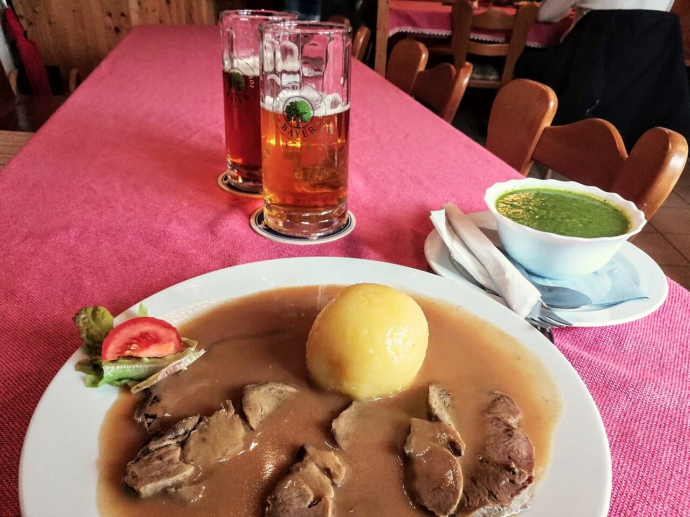

Fotografias ilustrativas — no site final usamos as vossas.
4,7★ em 154 avaliações no Google.
Almoços e jantares para partilhar boa companhia.
Reserve por WhatsApp ou telefone e venha sem pressa.
O Solar da Peça é um restaurante na Rua da Peça, em Ronfe. Uma mesa posta para almoços e jantares em família ou com amigos.

Fotografias ilustrativas — no site final usamos as vossas.
Pedido de reserva
Escolha o dia e a hora — o pedido chega por WhatsApp e confirmamos logo.
↑ Assim chegaria a mensagem ao vosso WhatsApp. (Nesta demonstração nada é enviado.)
Onde estamos
Proposta para Solar da Peça
Esta página foi feita de propósito para Solar da Peça por João Machado, programador web aqui de Guimarães. Inclui:
Eu trato do alojamento e da manutenção. Sem compromisso.